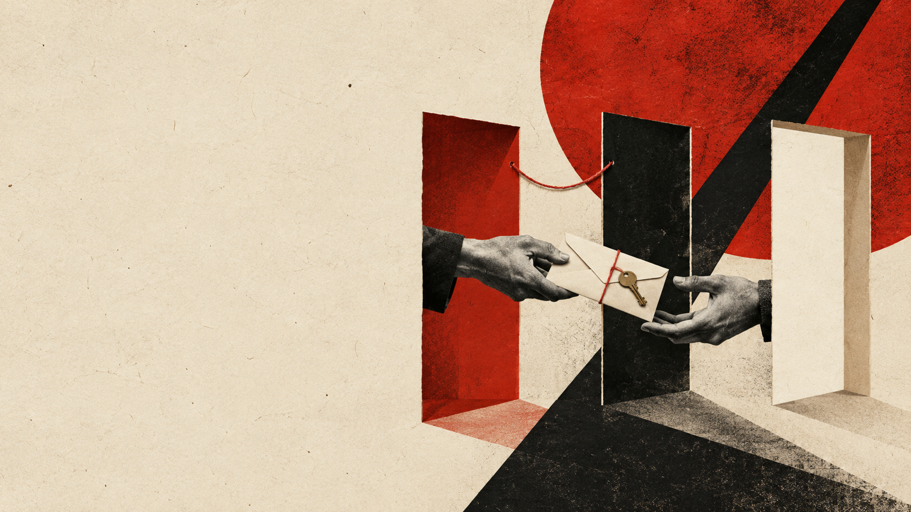
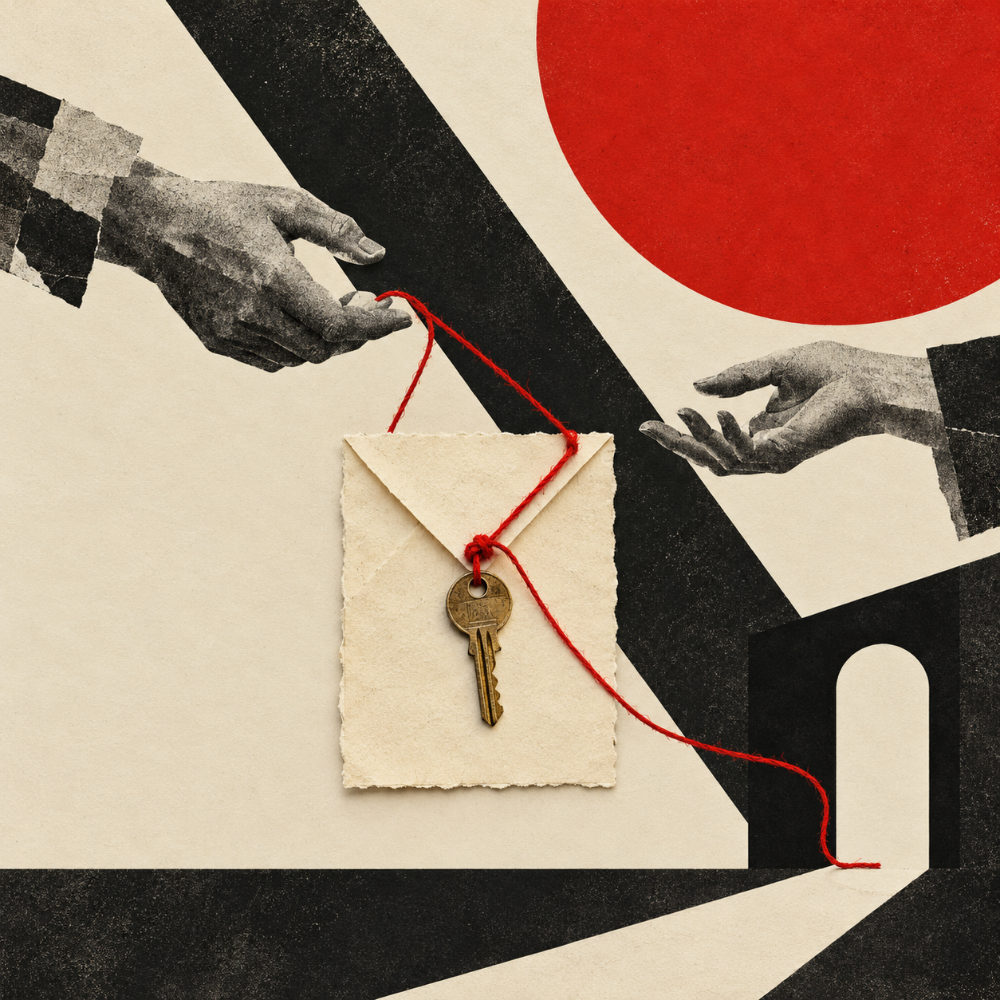

A01 P0 · 已生成 / 构图母版

三扇门主视觉母版
现有 1672×940；建议重绘母版 ≥2560×1440
商店构图、宣传页、未来主视觉
左侧约 42% 留给标题；三扇门、信封与手集中在右侧。现有母版宽 1672，3840 宽图仍需另做。
要求与可复制提示词
A02 P0 · 已接入游戏

家庭案例：钥匙与红线
现有 1254×1254；后续建议 2048×2048 PNG
选案页、开场、展厅与图像手记
钥匙象征联系；红线松弛，出口保持空白。双手不抓扯人物。
要求与可复制提示词
A03 P0 · 已接入游戏
工作案例：留白事由
现有 1254×1254；后续建议 2048×2048 PNG
选案页、开场、展厅与图像手记
两条公开工作线；下方矩形事由栏必须完全空白。黑色信封保持封闭。
要求与可复制提示词
A04 P0 · 已接入游戏 / 第七版
传话摄影物件：九格透明图集
已交付 1254×1254 RGBA；3×3，每格 418×418
本局拼贴长卷、交付校样与实体纸卷
原图保留透明通道，按 UV 取格。九件物体不跨格；不把文字画进图。照片质感、日常物件和大块留白用于近距离阅读。
要求与可复制提示词
C01 P1 · 待制作
停顿工具插画
建议 1024×1024 PNG，缩小验收到 128×128
下一轮扩大卡牌详情后接入；当前小按钮继续保留文字
每张一件主物；主体控制在中间 70%。先附 A02/A03 作风格参考，再单张生成。不要把插画挤进现有按钮。
要求与可复制提示词
C02 P1 · 待制作
原话工具插画
建议 1024×1024 PNG，缩小验收到 128×128
下一轮扩大卡牌详情后接入；当前小按钮继续保留文字
每张一件主物；主体控制在中间 70%。先附 A02/A03 作风格参考，再单张生成。不要把插画挤进现有按钮。
要求与可复制提示词
C03 P1 · 待制作
界限工具插画
建议 1024×1024 PNG，缩小验收到 128×128
下一轮扩大卡牌详情后接入；当前小按钮继续保留文字
每张一件主物；主体控制在中间 70%。先附 A02/A03 作风格参考，再单张生成。不要把插画挤进现有按钮。
要求与可复制提示词
C04 P1 · 待制作
追问工具插画
建议 1024×1024 PNG，缩小验收到 128×128
下一轮扩大卡牌详情后接入；当前小按钮继续保留文字
每张一件主物；主体控制在中间 70%。先附 A02/A03 作风格参考，再单张生成。不要把插画挤进现有按钮。
要求与可复制提示词
C05 P1 · 待制作
翻译工具插画
建议 1024×1024 PNG，缩小验收到 128×128
下一轮扩大卡牌详情后接入；当前小按钮继续保留文字
每张一件主物；主体控制在中间 70%。先附 A02/A03 作风格参考，再单张生成。不要把插画挤进现有按钮。
要求与可复制提示词
C06 P1 · 待制作
代偿工具插画
建议 1024×1024 PNG，缩小验收到 128×128
下一轮扩大卡牌详情后接入；当前小按钮继续保留文字
每张一件主物；主体控制在中间 70%。先附 A02/A03 作风格参考，再单张生成。不要把插画挤进现有按钮。
要求与可复制提示词
C07 P1 · 待制作
重述工具插画
建议 1024×1024 PNG，缩小验收到 128×128
下一轮扩大卡牌详情后接入；当前小按钮继续保留文字
每张一件主物；主体控制在中间 70%。先附 A02/A03 作风格参考，再单张生成。不要把插画挤进现有按钮。
要求与可复制提示词
E01 P2 · 待制作
结局意象：出口
建议 2048×1152，16:9 PNG
未来结局回看页，不覆盖当前可探索的三维后果
三类意象按内容使用，不作好坏排名。等结局回看页需要配图时再制作，先共用三类意象。
要求与可复制提示词
E02 P2 · 待制作
结局意象：在场
建议 2048×1152，16:9 PNG
未来结局回看页，不覆盖当前可探索的三维后果
三类意象按内容使用，不作好坏排名。等结局回看页需要配图时再制作，先共用三类意象。
要求与可复制提示词
E03 P2 · 待制作
结局意象：承担
建议 2048×1152，16:9 PNG
未来结局回看页，不覆盖当前可探索的三维后果
三类意象按内容使用，不作好坏排名。等结局回看页需要配图时再制作，先共用三类意象。
要求与可复制提示词
T01 P2 · 待制作
低对比纸张材质
建议 2048×2048，可平铺 PNG
仅在程序化纸纹仍显单薄时补充
亮度起伏极低，边缘无接缝，无污渍折痕。文字区域必须可读。现有代码纸纹优先保留。
要求与可复制提示词
S01 P0 · 已有 SVG 构图稿 / 待导出
商店头图
920×430，最终 PNG/JPG
正式商店图形资产
提供可编辑 SVG 构图稿。插画与标题分别排版；上传前按模板导出栅格并缩小检查。仅保留游戏标题和画面。
打开可编辑 SVG ↗
要求与可复制提示词
S02 P0 · 已有 SVG 构图稿 / 待导出
小胶囊
462×174，最终 PNG/JPG
正式商店图形资产
提供可编辑 SVG 构图稿。插画与标题分别排版；上传前按模板导出栅格并缩小检查。仅保留游戏标题和画面。
打开可编辑 SVG ↗
要求与可复制提示词
S03 P0 · 已有 SVG 构图稿 / 待导出
主胶囊
1232×706，最终 PNG/JPG
正式商店图形资产
提供可编辑 SVG 构图稿。插画与标题分别排版；上传前按模板导出栅格并缩小检查。仅保留游戏标题和画面。
打开可编辑 SVG ↗
要求与可复制提示词
S04 P0 · 已有 SVG 构图稿 / 待导出
竖胶囊
748×896，最终 PNG/JPG
正式商店图形资产
提供可编辑 SVG 构图稿。插画与标题分别排版；上传前按模板导出栅格并缩小检查。仅保留游戏标题和画面。
打开可编辑 SVG ↗
要求与可复制提示词
S05 P0 · 已有 SVG 构图稿 / 待导出
库封面
600×900，最终 PNG/JPG
正式商店图形资产
提供可编辑 SVG 构图稿。插画与标题分别排版；上传前按模板导出栅格并缩小检查。仅保留游戏标题和画面。
打开可编辑 SVG ↗
要求与可复制提示词
S06 P0 · 待制作
库横幅
3840×1240 PNG
Library Hero
这张不放游戏 logo。当前母版宽 1672，需按 3840×1240 重新绘制或扩图，并检查细节。
要求与可复制提示词
S07 P0 · 已有字体与 SVG / 待导出
透明标题 Logo
1280 宽和/或 720 高 PNG
Library Logo 与商店标题层
用现有 Anton 字体排版，不让生成模型画字。附字体与 OFL 许可，以及可编辑 SVG；正式上传导出透明 PNG。
打开可编辑 SVG ↗
要求与可复制提示词
S08 P0 · 已采集 10 张真实玩法画面
真实玩法截图
至少 1920×1080，16:9，至少 5 张
商店截图
从实际播放器采集：空间、选择与代价、门前交付、逐句回看、结局后空间。生成插画不是玩法截图。
要求与可复制提示词
插画和标题分层。附 Anton 字体及 OFL 许可，SVG 可继续编辑；正式提交前，按当前 Steam 模板导出 PNG/JPG 并检查缩略图。Library Hero 另需 3840×1240 的原生宽图。